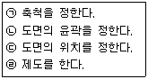
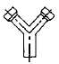
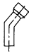
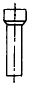
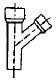
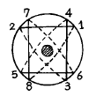
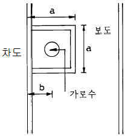

조경기능사 (2003-03-30 기출문제)
1과목: 조경일반
1. 잔디밭, 일제림, 독립수 등의 경관에 나타나는 아름다움은?
- 조화미
- 단순미
- 점층미
- 대비미
(정답률: 73%)

2. 차경(借景)이란?
- 멀리 보이는 자연 풍경을 경관 구성 재료의 일부로 이용하는 것.
- 삼림이나 하천 등의 경치를 잘 나타낸 것
- 아름다운 경치를 정원내에 만든 것
- 연못의 수면이나 잔디밭이 한눈에 보이지 않게 하는 것
(정답률: 88%)
3. 대문에서 현관에 이르는 공간으로 명쾌하고 가장 밝은 공간이 되도록 할 곳은?
- 앞뜰
- 안뜰
- 뒷뜰
- 가운데 뜰
(정답률: 82%)
4. 중국 정원 중 가장 오래된 수렵원은?
- 상림원(上林苑)
- 북해공원(北海公園)
- 원유(苑有)
- 승덕이궁(承德離宮)
(정답률: 86%)
5. 조경설계시 동선계획에 포함되지 않는 것은?
- 원로
- 산책로
- 주차장
- 건축물
(정답률: 70%)
6. 풍경식 조경양식의 특성과 가장 관계가 깊은 것은?
- 기하학적인 선
- 전정한 형상수(topiary)사용
- 정형적인 터가르기
- 자유로운 선
(정답률: 78%)
7. 새로운 정원양식을 생기게 하는 것 중 자연적인 조건이 아닌 것은?
- 기상
- 역사
- 암석
- 지형
(정답률: 86%)
8. 건축식 조경양식으로 대표되는 나라는?
- 프랑스
- 영국
- 중국
- 일본
(정답률: 77%)
9. 제도를 하는 순서가 올바른 것은?

- (ㄱ) - (ㄴ) - (ㄷ) - (ㄹ)
- (ㄴ) - (ㄷ) - (ㄱ) - (ㄹ)
- (ㄴ) - (ㄱ) - (ㄷ) - (ㄹ)
- (ㄷ) - (ㄴ) - (ㄱ) - (ㄹ)
(정답률: 71%)
10. 옥상정원의 환경조건에 대한 설명이다. 틀린 것은?
- 토양수분의 용량이 적다.
- 토양 온도의 변동 폭이 크다.
- 양분의 유실속도가 늦다.
- 바람의 피해를 받기 쉽다.
(정답률: 89%)
11. 떼지어 나는 철새나 설경 또는 수면에 투영된 영상 등에서 느껴지는 경관은?
- 초점경관
- 관개경관
- 세부경관
- 일시경관
(정답률: 87%)
12. 정원 양식 중 연대(年代)적으로 가장 늦게 발생한 정원 양식은?
- 영국의 풍경식 정원양식
- 프랑스의 평면기하학식 정원양식
- 이탈리아의 노단건축의 정원양식
- 독일의 근대건축식 정원양식
(정답률: 88%)
13. 다음 중 일본의 축산고산수 정원에서 강조의 중심이 될 수 있는 성질이 가장 강한 것은?
- 폭포와 바위돌
- 왕모래
- 정자
- 잔디밭
(정답률: 64%)
14. 고대 그리이스에 체육 훈련을 하는 자리로 만들어졌던 것은?
- 페리스틸리움
- 지스터스
- 짐나지움
- 보스코
(정답률: 89%)
15. 다음 조경의 효과 중 틀린 것은?
- 공기의 정화
- 대기오염의 감소
- 소음 차단
- 수질오염의 증가
(정답률: 92%)
2과목: 조경재료
16. 줄기가 아름다우며 여름에 개화하여 꽃이 100여일 간다는 나무는?
- 백합나무
- 불두화
- 배롱나무
- 이팝나무
(정답률: 83%)
17. 이산화황에 피해를 입기 쉬운 경우를 설명한 것이다. 잘못된 것은?
- 공중습도가 낮을 때
- 한 낮
- 여름철
- 오래된 잎
(정답률: 61%)
18. 겨울 화단에 심을 수 있는 식물은?
- 팬지
- 매리골드
- 다알리아
- 꽃양배추
(정답률: 91%)
19. 건조한 땅이나 습지에 모두 잘 견디는 수종은?
- 향나무
- 소나무
- 계수나무
- 꽝꽝나무
(정답률: 52%)
20. 플라스틱 제품의 특성이 아닌 것은?
- 비교적 산과 알칼리에 견디는 힘이 강하다.
- 접착 시키기가 간단하다.
- 저온에서도 파손이 안된다.
- 60℃ 이상에서 연화된다.
(정답률: 79%)
21. 지름 20 - 30㎝ 의 돌이나 큰 돌을 깨서 만드는 경우도 있으며 주로 기초용으로 사용하는 것은 무슨 돌인가?
- 산석
- 강석(하천석)
- 잡석
- 판석
(정답률: 78%)
22. 겨울철 지상부의 잎이 말라 죽지 않는 지피식물은?
- 비비추
- 맥문동
- 옥잠화
- 들잔디
(정답률: 86%)
23. 감상하는 부분이 주로 줄기가 되는 나무는?
- 자작나무
- 자귀나무
- 수양버들
- 위성류
(정답률: 72%)
24. 우리나라 잔디에 대한 설명이 옳지 않은 것은?
- 밟는데 견디는 힘이 크다
- 그늘에서 잘 자란다.
- 온도가 높아야 잘 자란다.
- 지표를 덮는 힘이 크다
(정답률: 84%)
25. 다음 그림과 같은 토관 중 45° 곡관은?




(정답률: 78%)
26. 염분에 강한 수종으로 짝지어진 것은?
- 해송, 왕벚나무
- 단풍나무, 가시나무
- 비자나무, 사철나무
- 광나무, 목련
(정답률: 68%)
27. 비닐포, 비닐망 등은 어느 수지에 속하는가?
- 아크릴수지
- 염화비닐수지
- 폴리에틸렌수지
- 멜라민수지
(정답률: 79%)
28. 쌓기용 시멘트 벽돌의 표준형 규격은?
- 190 × 90 × 57㎜
- 210 × 90 × 60㎜
- 190 × 90 × 60㎜
- 210 × 100 × 57㎜
(정답률: 92%)
29. 목재의 구조에는 춘재와 추재가 있는데 추재를 바르게 설명한 것은?
- 세포는 막이 얇고 크다.
- 빛깔이 엷고 재질이 연하다.
- 빛깔이 짙고 재질이 치밀하다.
- 춘재 보다 자람의 폭이 넓다.
(정답률: 85%)
30. 다음 중 상록침엽수에 해당하는 나무는?
- 은행나무
- 전나무
- 메타세쿼이어
- 말채나무
(정답률: 75%)
31. 다음 중 산울타리 수종으로 적당하지 않은 수종은?
- 가이즈카향나무
- 무궁화나무
- 단풍나무
- 측백나무
(정답률: 81%)
32. 목질 재료의 장점이라고 볼 수 없는 것은?
- 재질이 부드럽고 촉감이 좋다.
- 가공이 쉽고 열전도율이 크다.
- 색깔이나 무늬 등의 외관이 아름답다.
- 비중이 작으면서 압축인장강도가 크다.
(정답률: 81%)
33. 다음 중 거푸집이나 철근을 묶는데 사용되는 것은?
- 경판
- 양철판
- 와이어 로드
- 철선
(정답률: 75%)
34. 석재 가공 순서별로 바르게 나열한 것은?
- 혹두기, 정다듬, 도두락 다듬, 잔다듬
- 정다듬, 혹두기, 잔다듬, 도두락 다듬
- 혹두기, 도두락 다듬, 정다듬, 잔다듬
- 정다듬, 잔다듬, 혹두기, 도두락 다듬
(정답률: 80%)
35. 가공하지 않은 천연석으로 지름이 10 - 20㎝ 정도의 계란형의 돌은?
- 모암
- 원석
- 호박돌
- 조약돌
(정답률: 51%)
3과목: 조경 시공 및 관리
36. 수목의 위조 방지제는?
- 아토닉
- 루톤
- 그린너
- 하이포넥스
(정답률: 53%)
37. 노목이나 쇠약해진 나무의 보호대책으로 가장 옳지 않은 것은?
- 말라죽은 가지는 밑동으로부터 잘라내어 불에 태워 버린다.
- 바람맞이에 서 있는 노목은 받침대를 세워 흔들리는 것을 막아준다.
- 유기질거름 보다는 무기질거름만을 수시로 나무에 준다.
- 나무 주위의 흙을 자주 갈아 엎어 공기유통과 빗물이 잘 스며들게 한다.
(정답률: 77%)
38. 다음 중 잡초방제용 제초제가 아닌 것은?
- 메프수화제(스미치온)
- 씨마네수화제(씨마진)
- 알라유제(라쏘)
- 파라코액제(그라목손)
(정답률: 50%)
39. 병,해충의 화학적 방제 내용으로 옳지 못한 것은?
- 병,해충을 일찍 발견해야 한다.
- 되도록이면 발생 후에 약을 뿌려준다.
- 발생하는 과정이나 습성을 미리 알아두어야 한다.
- 약해에 주의 해야 한다.
(정답률: 90%)
40. 토공사에서 터파기의 량이 10 ㎥, 되메우기의 양이 7 ㎥ 일 때 잔토 처리량은 얼마인가?
- 2.3 ㎥
- 3 ㎥
- 4 ㎥
- 17 ㎥
(정답률: 77%)
41. 자연석 무너짐 쌓기의 설명으로 틀리는 것은?
- 기초가 될 밑돌은 약간 큰 돌을 땅속에 20-30cm정도 깊이로 묻히게 한다.
- 제일 윗부분에 놓이는 돌은 돌의 위부분이 모두 고저차가 크게 나도록 놓는다.
- 돌과 돌이 맞물리는 곳에는 작은 돌을 끼워 넣지 않는다.
- 돌을 쌓고 난 후 돌과 돌사이에 키가 작은 관목을 심는다.
(정답률: 77%)
42. 공사 현장의 공사관리 및 기술관리, 기타 공사업무 시행에 관한 모든 사항을 처리하여야 할 사람은 누구인가?
- 공사 발주자
- 공사 현장대리인
- 공사 현장감독관
- 공사 현장감리원
(정답률: 72%)
43. 철재(鐵材)로 만든 놀이시설에 녹이 슬어 다시 페인트 칠을 하려한다. 그 작업 순서가 잘 짝지어진 것은?
- 녹닦기(샌드페이퍼등) → 연단(광명단)칠하기 → 에나멜 페인트 칠하기
- 녹닦기(샌드페이퍼등) → 에나멜 페인트 칠하기 → 연단(광명단)칠하기
- 녹닦기(샌드페이퍼등) → 바니쉬 칠하기 → 연단(광명단)칠하기
- 녹닦기(샌드페이퍼등) → 연단(광명단)칠하기 → 바니쉬 칠하기
(정답률: 73%)
44. 다음 수목의 전정작업 요령에 관한 설명 중 틀린 것은?
- 전정작업은 하기전 나무의 수형을 살펴 이루어질 가지의 배치를 염두에 둔다.
- 우선 나무의 정상부로 부터 주지의 전정을 실시한다.
- 주지의 전정은 주간에 대해서 사방으로 고르게 굵은 가지를 배치하는 동시에 상하(上下)로도 적당한 간격 으로 자리잡도록 한다.
- 상부는 가볍게, 하부는 강하게 한다.
(정답률: 79%)
45. 소나무의 순따기에 관한 설명 중 바르지 못한 것은?
- 해마다 5-6월경 새순이 6-9㎝ 자라난 무렵 실시한다.
- 손 끝으로 따주어야 하고, 가을까지 끝내면 된다.
- 노목이나 약해보이는 나무는 다소 빨리 실시한다.
- 순따기를 한 후에는 토양이 과습하지 않아야 한다.
(정답률: 72%)
46. 배롱나무, 장미 등과 같은 내한성이 약한 나무의 지상부를 보호하기 위하여 쓰이는 월동 방법으로 가장 적합한 것은?
- 흙묻기
- 새끼감기
- 연기씌우기
- 짚싸기
(정답률: 75%)
47. 디딤돌 시공시 돌의 표면이 지면에 어떻게 놓여야 효과적인가?
- 지면에 수평이 되게
- 지면보다 약간 낮게
- 지면보다 약 3 - 5cm 높게
- 지면보다 약 3 - 5cm 낮게
(정답률: 88%)
48. 표면 배수시 빗물받이는 몇 m 마다 설치하는가?
- 1 - 10 m
- 20 - 30 m
- 40 - 50 m
- 60 - 70 m
(정답률: 85%)
49. 그림과 같은 뿌리분 감기 요령은 어떤 방법에 의한 것인가?

- 4줄 한번감기
- 4줄 세번감기
- 3줄 두번감기
- 돌려감기
(정답률: 74%)
50. 40 ㎡의 면적에 팬지를 20 ㎝ x 20 ㎝ 간격으로 심고자 한다. 필요한 팬지묘의 그루수는?
- 100그루
- 200그루
- 400그루
- 1,000그루
(정답률: 59%)
51. 조경공사의 일반적인 순서를 바르게 나타낸 것은?
- 부지지반조성 → 조경시설물설치 → 지하매설물설치 → 수목식재
- 부지지반조성 → 지하매설물설치 → 수목식재 → 조경시설물설치
- 부지지반조성 → 수목식재 → 지하매설물설치 → 조경시설물설치
- 부지지반조성 → 지하매설물설치 → 조경시설물설치 → 수목식재
(정답률: 78%)
52. 잔디에 관한 내용 중 틀린 것은?
- 잔디는 생육온도에 따라 난지형 잔디와 한지형 잔디로 구분된다.
- 잔디의 번식방법에는 종자파종과 영양번식이 있다.
- 한국잔디는 일반적으로 종자번식이 잘 되기 때문에 건설현장에서 종자파종으로 잔디밭을 조성한다.
- 종자파종은 뗏장심기에 비하여 균일하고 치밀한 잔디면을 만들 수 있다.
(정답률: 77%)
53. 조경 조명시설을 할 때 정원, 공원의 조도는 얼마로 하는가?
- 0.5 - 1.0 룩스
- 1.5 - 3.0 룩스
- 20 - 50 룩스
- 100 - 200 룩스
(정답률: 62%)
54. 큰 돌을 운반하거나 앉힐 때 주로 쓰이는 기구는?
- 예불기
- 스크레이퍼
- 체인 블럭
- 로울러
(정답률: 86%)
55. 수목의 이식시 조개분으로 분뜨기 했을 때 분의 깊이는 근원직경의 몇 배가 좋은가?
- 2배
- 3배
- 4배
- 6배
(정답률: 75%)
56. 공사원가계산 체계에서 이윤 산정시 고려하는 내용이 아닌 것은?
- 재료비
- 노무비
- 경비
- 일반관리비
(정답률: 33%)
57. 다음 가로수의 식재 위치에 따른 식재구덩이의 크기 및 보차경계선으로 부터의 거리를 바르게 제시한 것은?

- a = 0.8m 이상, b = 0.65m
- a = 1m 이상, b = 0.65m
- a = 0.8m 이상, b = 0.35m
- a = 1m 이상, b = 0.35m
(정답률: 62%)
58. 조경 공사 시공의 특징을 바르게 설명한 것은?
- 각종 자연재료만을 사용하므로 주변에서 조달하기 위해 기계 장비 투입이 잦은 편이다.
- 어느 공사보다도 많은 공사의 종류를 가지고 있지만 규모가 작아 기계 장비의 투입이 곤란하다.
- 공사의 규모가 크고, 기계 장비의 투입이 많으므로 인력 사용은 적은 편이다.
- 기계 장비의 투입이 유리하여 인력에 의존하는 경우가 적은 편이다.
(정답률: 55%)
59. 비탈면 경사의 표시에서 1 : 2.5 에서 2.5는 무엇을 뜻하는가?
- 수직고
- 수평거리
- 경사면의 길이
- 안식각
(정답률: 77%)
60. 조경 수목의 연간 관리 작업 계획표를 작성하려고 한다. 작업 내용에 포함되는 것이 아닌 것은?
- 병·해충 방제
- 시비
- 뗏밥 주기
- 수관 손질
(정답률: 53%)